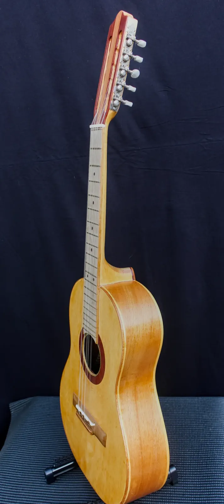

OFERTA Viola

Madeiras
- Tampo
- Cedro Rosa
- Fundo e laterais
- Cedro Rosa
- Braço
- Cedro Rosa
- Escala
- Ipê
- Cavalete
- Ipê
Componentes
- Tarraxas
- Tradicional
- Filetes / marchetaria
- Marupá
- Acabamento
- Goma Laca
- Trastes
- Dourados
- Nut
- Osso legítimo
- Rastilho
- Osso legítimo
- Preço
- R$ 1.500,00
- Identificação
- BL-25-VL-001
Toda jornada na música começa em algum instrumento — e esta viola caipira foi pensada exatamente para esse primeiro passo. Faz parte da linha "Primeiras Notas", criada para quem está começando e não quer, nem precisa, abrir mão de um instrumento feito à mão, com madeira maciça de verdade.
O conjunto em cedro-rosa — tampo, fundo e laterais — resulta em um instrumento leve, fácil de segurar por longos períodos de estudo, com um timbre agradável e claro que ajuda o iniciante a ouvir com precisão o que está tocando. Escala e cavalete em ipê garantem resistência ao desgaste diário do aprendizado, quando as mãos ainda estão treinando força e precisão nos trastes.
Os filetes em marupá e o acabamento em goma-laca dão um visual bonito sem encarecer o instrumento, mantendo essa viola acessível para quem está entrando agora no mundo da viola caipira. Trastes dourados, rastilho e nut em osso são detalhes que normalmente só aparecem em instrumentos de linha superior — aqui, entram de série, porque acredito que até o primeiro instrumento de alguém merece ser bem construído.
Feita pelas minhas mãos, essa viola carrega a mesma dedicação de qualquer instrumento que sai da minha bancada — só que pensada pra ser o começo de uma história, não o topo dela.